Contact
- satpreetsingh@gmail.com
- Department
- School of Data and Information Sciences, University of North Carolina at Chapel Hill
- Prospective students
- See Join us for how to apply.
- Elsewhere
- Google Scholar · GitHub · ORCID · LinkedIn · X · Bluesky
Collaborators
Our work has always involved close collaboration across disciplines.
Experimental and clinical partners: we are especially interested in groups with rich time-series data, or with systems where perturbation experiments are possible, who want models that make testable predictions rather than just fit data, and where a simulation- or dynamics-based model could sharpen their questions.
Theory and methods partners: we are equally keen to work with mathematicians, physicists, statisticians, computer scientists and others with complementary toolkits on open questions in artificial and natural intelligence.
If either sounds like you, please reach out.
